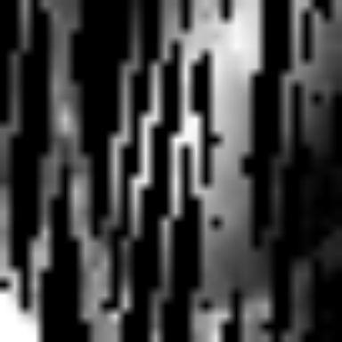
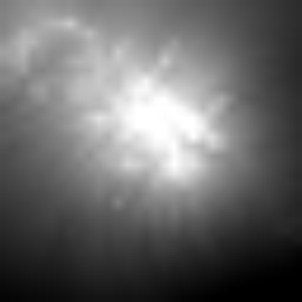
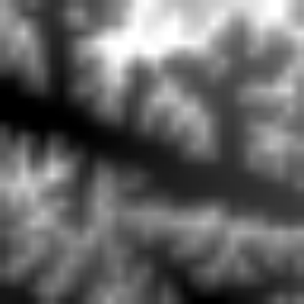
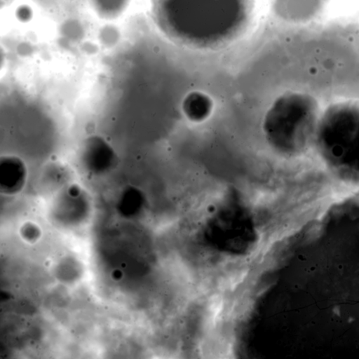

Scene search metadata is integrated. A clipped true-colour preview is shown below when the COG processing job succeeds. No mineral classification is inferred from RGB imagery.
Mission rehearsal theme
Volcanic-hydrothermal reconnaissance
Task-specific procedure rehearsal
Documented geological context
USGS maps the Koh-i-Sultan Volcanic Group as agglomerate, tuff and andesitic lava.
Earth/Mars coarse profiles at ~925 m · independent lunar south-pole LOLA profile at native 80 m
TERRAIN PROFILE
NILI PATERA · MARSLIMITED COVERAGE

Median slope—
P90 slope—
P90 local relief—
Observed cells—
MGS MOLA MEGDR 64 ppd · 30 km window · only cells with observation counts are included in the terrain derivatives.
KOH-I-SULTAN · PAKISTANPROCESSED

Median slope—
P90 slope—
P90 local relief—
Valid cells—
Copernicus DEM GLO-30 DSM · 30 km window · averaged to approximately 925 m before slope/relief analysis.
HISPAR GLACIER · PAKISTANPROCESSED

Median slope—
P90 slope—
P90 local relief—
Valid cells—
Copernicus DEM GLO-30 DSM · 30 km window · averaged to approximately 925 m before slope/relief analysis.
SHACKLETON RIM · MOONLOLA PENDING

Median slope—
P90 slope—
P90 local relief—
LOLA return support—
NASA LRO LOLA PDS GDR · native 80 m polar grid · 24 × 24 km Shackleton Rim window. LDEM is interpolated; LDEC counts are shown separately.
Coverage and interpretation notes load from the validated terrain output. Terrain profiles are descriptors only—not geological equivalence, rover mobility, landing safety or a Mars similarity percentage. Earth DSM and Mars areoid elevation datums are not compared.
ANALOG DISCOVERY ATLAS / GLOBAL CANDIDATE SEARCH
Curated, source-linked candidate seeds · under-characterized leads are not presented as validated discoveries
LOADING CANDIDATES
Explore environments by mission and process. This is a reproducible candidate seed atlas—not an exhaustive search of Earth. Every location is labelled by what evidence is actually present and what still requires field validation. The Chagai playa lead comes from a historical NASA report and needs modern confirmation.
EARTH CANDIDATE FIELD MAP— sites
Under-characterized research lead Established reference
Loading evidence-linked candidate records…
SELECT A CANDIDATE TO INSPECT ITS DOSSIER
Choose a map marker or card to inspect the working hypothesis, source references and outstanding evidence.
A short, playable science exercise. The best answer is a task-specific rehearsal choice—not a claim that Earth reproduces the Moon or Mars.
FIELD SCHOOL / RESEARCH TRAINEE0 XP
0/3 missions cleared · 0 correct · 0 current streak
MISSION 01 / 03
GLOBAL COORDINATE SCOUT / OPEN-DATA FIELD RECONNAISSANCE
Query a new Earth location directly · NASA POWER + Sentinel-2 L2A + Copernicus DEM STAC
WORKER NOT CONNECTED
Move beyond the curated candidate pins. Enter any Earth coordinate and a study radius to discover current public climate and satellite-data coverage. The scan produces a first-pass evidence dossier—not a planetary similarity score or a verified geological interpretation.
Connect a Cloudflare Worker to activate the live public-data scan.
SCOUT STUDY WINDOW / WGS8428.583333° N · 62.633333° E
User-selected centre Approximate search window
READY FOR A GLOBAL DATA SCAN
Start with the prefilled Chagai playa midpoint or choose any Earth coordinate. The scout queries three open data services and reports acquisition metadata, units, and limits.
NASA POWER / monthly climateSentinel-2 L2A / scene discoveryCopernicus DEM GLO-30 / tile discovery
The radius creates an approximate rectangular bounding box; it is not a geological boundary. NASA POWER is gridded climatology. STAC scene cloud cover is not an AOI-specific cloud mask. Copernicus catalogue tiles are not terrain metrics until downloaded, mosaicked, resampled and quality-screened. NASA POWER docs ↗ · Planetary Computer STAC ↗
AGENTIC SCIENCE OPERATIONS / MISSION DIRECTOR
Specialist evidence agents + optional open-weight tool-using LLM · local scientific mode always available
LOCAL MODE READY
Ask a research question. Four deterministic evidence specialists inspect terrain, climate, surface context and data completeness. The optional cloud Mission Director can call allow-listed evidence tools and synthesize a decision brief. It cannot create missing measurements.
Paste the base URL only. No API key belongs in this browser.
Run the offline science review immediately, or connect a Cloudflare Worker to activate the open-weight tool-using Mission Director. The measured evidence remains in control of the decision.
Compare measured terrain descriptors at approximately common 925 m support · no blended similarity score
LOADING EVIDENCE
Choose a planetary reference and the field experiment you want to rehearse. ANALOG-X compares the available Earth and planetary terrain profiles, shows which site is closer on each measured dimension, and turns the evidence into a field protocol.
Loading the Earth, Mars and Moon terrain profiles…
Measured descriptor
Planetary reference
Koh-i-Sultan
Δ from target
Hispar Glacier
Δ from target
Closer on this metric
Waiting for validated terrain files…
FIELD REHEARSAL RECOMMENDATION
Select an objective to see which Earth site offers the most relevant documented rehearsal conditions.
INTERPRETATION & LIMITATIONS
Terrain descriptors are regional context only. They do not establish landing safety, rover mobility, geological equivalence, or resource availability.
FIELD CAMPAIGN SIGNAL / NASA POWER CLIMATOLOGY
Loading monthly climate snapshots…
Shows the three lowest NASA POWER monthly climatological precipitation values at each Earth coordinate, with mean 2 m air temperature and 10 m wind. This is a seasonal planning signal—not a forecast, road/access assessment, safety window or station observation.
FIELD KIT / TASK-SPECIFIC CHECKLIST
Equipment checklist will appear with the selected field experiment.
Method: compare absolute differences in median slope, P90 slope, and P90 3×3 local relief (approximately 2.775 km footprint). Earth Copernicus GLO-30 DSM is averaged to ~925 m; Mars MOLA is ~915–926 m near Nili Patera; lunar LOLA 80 m is averaged to ~925 m. A closer numeric descriptor is not proof of a complete analog. Data provenance ↗
Includes source values, differences, protocol steps and non-transferable conditions.
NASA CHALLENGE / OBJECTIVE COVERAGE
What the current release demonstrates—and what is still outstanding
PARTIAL COMPLIANCE
EARTH OBSERVATIONS
NASA POWER for eight locations; Sentinel-2 L2A scene metadata and previews; Copernicus DEM terrain; NASA CMR MODIS/MERRA-2 catalogue discovery.
INTEGRATED
MARS REFERENCE
MOLA 64 ppd profile around Nili Patera, compared with Pakistan terrain at coarse support. Only 50.53% of MOLA cells are observed.
PARTIAL / LIMITED COVERAGE
PERMANENT LUNAR BASE
NASA LRO LOLA 80 m south-pole DEM and count map processed around Shackleton Rim, then aggregated to ~925 m for a common terrain-support comparison with Earth/Mars. Diviner PRP V2.0 collection metadata and south-polar table range access are verified, but site-level temperature / ice-depth statistics are not yet processed; illumination and PSR mapping remain outstanding.
USGS maps Koh-i-Sultan as agglomerate, tuff and andesitic lava: useful for volcanic/hydrothermal process rehearsal, not basaltic composition equivalence. No site-scale mineral map or field samples are integrated.
PARTIAL / NEEDS VALIDATION
ENVIRONMENT / RESOURCES
Climate, solar, wind, precipitation and temperature context is present. Dust flux, water-ice abundance, illumination, resource prospectivity and subsurface conditions are not calculated.
The challenge does not require every listed data portal or every possible analogy dimension. It does require a defensible explanation of which planetary characteristics each Earth site can help rehearse. This release is a working prototype, not a completed lunar landing-site assessment.
DATA PROVIDERS / VERIFIED CAPABILITY REGISTER
Integrated products, catalogue discovery, reviewed portals and reference-only sources
PROVENANCE REGISTER
NASA / INTEGRATED
POWER Climatology
Eight site records with temperature, RH, wind, precipitation and solar resource. Reproducible server-side snapshots.
80 m south-pole elevation and matching observation-count grid processed for Shackleton Rim; coarse ~925 m terrain descriptors are also available. Diviner annual temperature and water-ice-permafrost products remain reference-only.
Direct STAC, OData, openEO and Sentinel Hub APIs are available. Current Sentinel data are accessed via Microsoft Planetary Computer, not this endpoint.